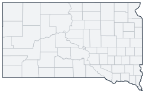

Historical county changes, 1790–1990 › South Dakota

| Name↕ | Unit↕ | Existed↕ | FIPS↕ |
|---|---|---|---|
| Armstrong County | county | 1890–1950 | 46001 |
| Aurora County | county | 1880–1990 | 46003 |
| Beadle County | county | 1880–1990 | 46005 |
| Bennett County | county | 1910–1990 | 46007 |
| Bon Homme County | county | 1870–1990 | 46009 |
| Boreman County | county | 1880 | 46009.1 |
| Brookings County | county | 1870–1990 | 46011 |
| Brown County | county | 1880–1990 | 46013 |
| Brule County | county | 1880–1990 | 46015 |
| Buffalo County | county | 1870–1990 | 46017 |
| Butte County | county | 1890–1990 | 46019 |
| Campbell County | county | 1880–1990 | 46021 |
| Charles Mix County | county | 1870–1990 | 46023 |
| Cheyenne River Reservation | county | 1890–1900 | |
| Choteau County | county | 1890 | 46023.1 |
| Clark County | county | 1880–1990 | 46025 |
| Clay County | county | 1870–1990 | 46027 |
| Codington County | county | 1880–1990 | 46029 |
| Corson County | county | 1910–1990 | 46031 |
| Crow Creek Reservation | county | 1890 | |
| Custer County | county | 1880–1990 | 46033 |
| Davison County | county | 1880–1990 | 46035 |
| Day County | county | 1880–1990 | 46037 |
| Delano County | county | 1890 | 46037.1 |
| Deuel County | county | 1870–1990 | 46039 |
| Dewey County | county | 1880–1990 | 46041 |
| Douglas County | county | 1880–1990 | 46043 |
| Edmunds County | county | 1890–1990 | 46045 |
| Ewing County | county | 1890 | 46045.1 |
| Fall River County | county | 1890–1990 | 46047 |
| Faulk County | county | 1880–1990 | 46049 |
| Grant County | county | 1880–1990 | 46051 |
| Gregory County | county | 1890–1990 | 46053 |
| Haakon County | county | 1920–1990 | 46055 |
| Hamlin County | county | 1880–1990 | 46057 |
| Hand County | county | 1880–1990 | 46059 |
| Hanson County | county | 1880–1990 | 46061 |
| Harding County | county | 1890–1990 | 46063 |
| Hughes County | county | 1880–1990 | 46065 |
| Hutchinson County | county | 1870–1990 | 46067 |
| Hyde County | county | 1890–1990 | 46069 |
| Jackson County | county | 1890–1990 | 46071 |
| Jayne County | county | 1870 | 46071.1 |
| Jerauld County | county | 1890–1990 | 46073 |
| Jones County | county | 1920–1990 | 46075 |
| Kingsbury County | county | 1880–1990 | 46077 |
| Lake County | county | 1880–1990 | 46079 |
| Lawrence County | county | 1880–1990 | 46081 |
| Lincoln County | county | 1870–1990 | 46083 |
| Lower Brule Reservation | county | 1890 | |
| Lyman County | county | 1880–1990 | 46085 |
| Marshall County | county | 1890–1990 | 46091 |
| Martin County | county | 1890 | 46091.1 |
| McCook County | county | 1880–1990 | 46087 |
| McPherson County | county | 1890–1990 | 46089 |
| Meade County | county | 1890–1990 | 46093 |
| Mellette County | county | 1910–1990 | 46095 |
| Meyer County | county | 1880 | 46095.1 |
| Miner County | county | 1880–1990 | 46097 |
| Minnehaha County | county | 1870–1990 | 46099 |
| Moody County | county | 1880–1990 | 46101 |
| Nowlin County | county | 1890 | 46101.1 |
| Pennington County | county | 1880–1990 | 46103 |
| Perkins County | county | 1910–1990 | 46105 |
| Pine Ridge Reservation | county | 1890–1910 | |
| Potter County | county | 1890–1990 | 46107 |
| Pratt County | county | 1890 | 46107.1 |
| Presho County | county | 1890 | 46107.2 |
| Roberts County | county | 1890–1990 | 46109 |
| Rosebud Reservation | county | 1890–1900 | |
| Sanborn County | county | 1890–1990 | 46111 |
| Schnasse County | county | 1910 | 46111.1 |
| Scobey County | county | 1890 | 46111.2 |
| Shannon County | county | 1880–1990 | 46113 |
| Sisseton and Wahpeton Reservation | county | 1880–1890 | |
| Spink County | county | 1880–1990 | 46115 |
| Standing Rock Reservation (pt.) | county | 1900 | |
| Stanley County | county | 1880–1990 | 46117 |
| Sterling County | county | 1890–1910 | 46117.1 |
| Sully County | county | 1880–1990 | 46119 |
| Todd County | county | 1910–1990 | 46121 |
| Todd County (old) | county | 1870–1890 | 46119.1 |
| Tripp County | county | 1910–1990 | 46123 |
| Turner County | county | 1880–1990 | 46125 |
| Union County | county | 1870–1990 | 46127 |
| Walworth County | county | 1880–1990 | 46129 |
| Washabaugh County | county | 1920–1970 | 46131 |
| Washington County | county | 1890–1940 | 46133 |
| Yankton County | county | 1870–1990 | 46135 |
| Ziebach County | county | 1920–1990 | 46137 |
| Ziebach County (old) | county | 1890 | 46135.1 |
Total for 1880 includes population (134) of Fort Sisseton, reported separately.(p. 146, Note 4).
Total for 1890 includes population (1,838) of Yankton Indian Reservation, reported separately.(p. 146, Note 3).
Note: Decimals in FIPS codes come from Forstall, who gives every county a code, including counties that no longer exist. A county abolished between 1930 and 1990 keeps the code it had. However, a county which was abolished prior to 1930 never received a code. Such a county is given the code of the county which precedes it alphabetically plus a decimal to hold its place in the list.
Source: Richard L. Forstall (1996), Population of States and Counties of the United States: 1790 to 1990, U.S. Bureau of the Census (public domain). Always check a row against the scan it links to.